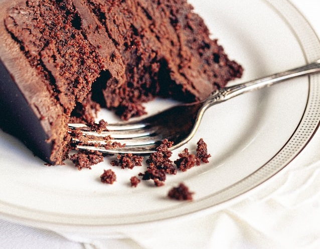

Chocolate Cake

Description
Chocolate cake is a cake flavoured with melted chocolate, cocoa powder, or both.
Chocolate cake is made with chocolate. It can also include other ingredients. These include fudge, vanilla creme, and other sweeteners.
Ingredients
- 2 cups white sugar
- 1 ¾ cups all-purpose flour
- ¾ cup unsweetened cocoa powder
- 1 ½ teaspoons baking powder
- 1 ½ teaspoons baking soda
- 1 teaspoon salt
- 2 eggs
- 1 cup milk
- ½ cup vegetable oil
- 2 teaspoons vanilla extract
- 1 cup boiling water
Steps
- Preheat oven to 350 degrees F (175 degrees C). Grease and flour two nine inch round pans.
- In a large bowl, stir together the sugar, flour, cocoa, baking powder, baking soda and salt. Add the eggs, milk, oil and vanilla, mix for 2 minutes on medium speed of mixer. Stir in the boiling water last. Batter will be thin. Pour evenly into the prepared pans.
- Bake 30 to 35 minutes in the preheated oven, until the cake tests done with a toothpick. Cool in the pans for 10 minutes, then remove to a wire rack to cool completely.